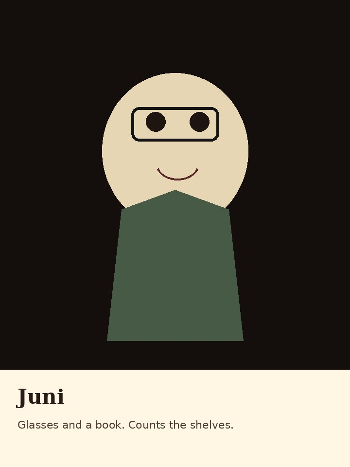
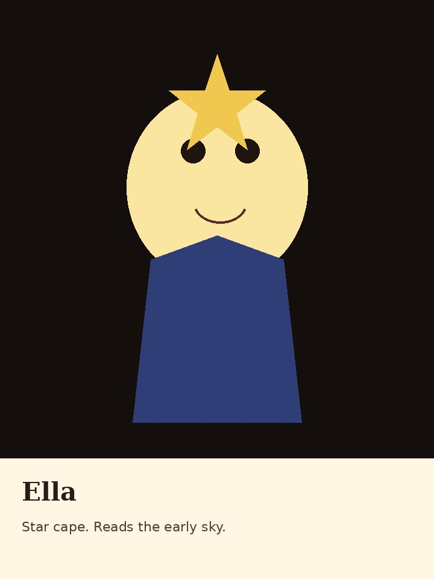
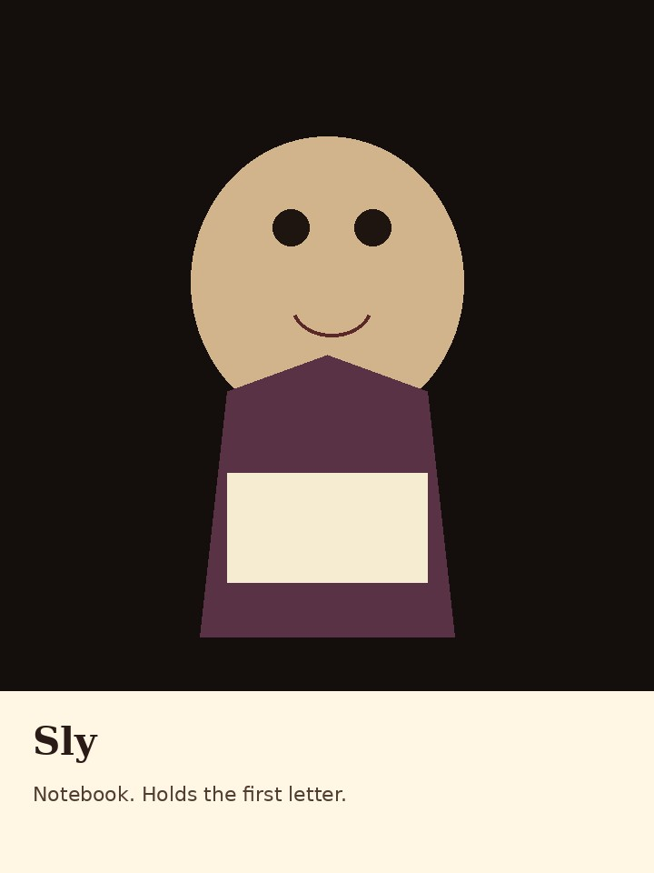
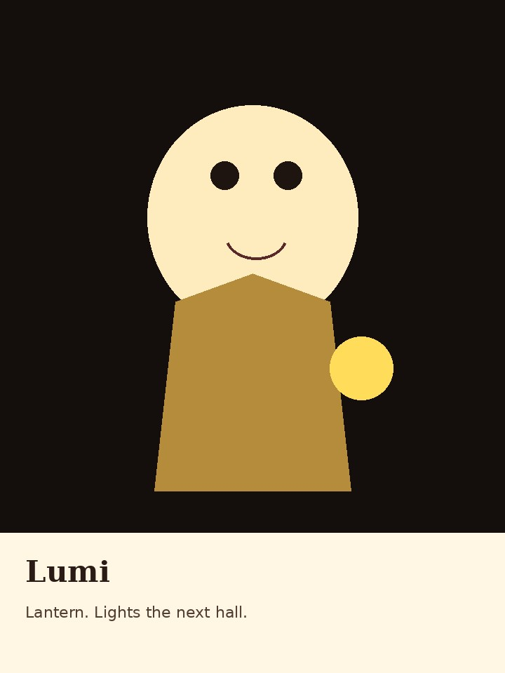

Jake
Gold coat. He keeps the quiet door.
Jake leads. Each friend has a picture and a short entrance.
Gold coat. He keeps the quiet door.

Red hair. She follows the paw prints.

Glasses and a book. She counts the shelves.

Star cape. She reads the early sky.

Notebook. He holds the first letter.

Lantern. She lights the next hall.